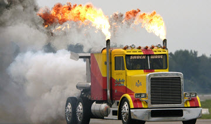
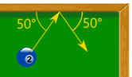

Momentum
Momentum is how much something wants to keep moving in the same direction.
This truck would be hard to stop ...

... it has a lot of momentum.
Faster? More momentum!
Heavier? More momentum!
Momentum is mass times velocity.
The symbol is p:
p = m v

Example: What is the momentum of a 1500 kg car going at highway speed of 28 m/s (about 100 km/h or 60 mph)?
p = m v
p = 1500 kg × 28 m/s
p = 42,000 kg m/s
The unit for momentum is:
- kg m/s (kilogram meter per second), or
- N s (Newton second)
They are the same! 1 kg m/s = 1 N s
We will use both here.
More examples:
| Mass | Speed | Momentum | |
|---|---|---|---|
| Bullet (9 mm) | 7.5 g 0.0075 kg |
1000 m/s |
0.0075 × 1000 = 7.5 kg m/s |
| Tennis Ball | 57 g 0.057 kg |
50 m/s |
0.057 × 50 = 2.85 kg m/s |
| Soccer Ball | 16 oz 0.45 kg |
100 km/h 28 m/s |
0.45 × 28 = 12.6 kg m/s |
| Basket Ball | 22 oz 0.6 kg |
3 m/s |
0.6 × 3 = 1.8 kg m/s |
| Hammer | 400 g 0.4 kg |
7 m/s |
0.4 × 7 = 2.8 kg m/s |
| Runner | 80 kg |
9 km/h 2.5 m/s |
80 × 2.5 = 200 kg m/s |
| Car | 1500 kg |
100 km/h 28 m/s |
1500 × 28 = 42,000 kg m/s |
Momentum has direction: the exact same direction as the velocity.
But many examples here only use speed (velocity without direction) to keep it simple.
Animation
Play with momentum in this animation.
Impulse
Impulse is change in momentum. Δ is the symbol for "change in", so:
Impulse is Δp
Force can be calculated from the change in momentum over time (called the "time rate of change" of momentum):
F = Δp Δt
Example: You are 60 kg and run at 3 m/s into a wall.
The wall stops you in 0.05 s. What is the force?
The wall is then padded and stops you in 0.2 s. What is the force?
First calculate the impulse:
Δp = m v
Δp = 60 kg x 3 m/s
Δp = 180 kg m/s
Stopping in 0.05 s:
F = Δp Δt
F = 180 kg m/s 0.05 s = 3600 N
Stopping in 0.2 s:
F = Δp Δt
F = 180 kg m/s 0.2 s = 900 N
Stopping at a slower rate has much less force!
- And that is why padding works so well
- And also why crash helmets save lives
- And why cars have crumple zones
Q: Isn't force normally calculated using F = ma ?
A: Well, F =
Δp
Δt
is the same thing, just a different form:
| Start with: | F = ma | |
| Acceleration is change in velocity v over time t: | F = m Δv Δt | |
| Rearrange to: | F = Δmv Δt | |
| And Δmv is change in momentum: | F = Δp Δt |
Impulse From Force
We can rearrange:
F = Δp Δt
Into:
Δp = F Δt
So we can calculate the Impulse (the change in momentum) from force applied for a period of time.
Example: A ball is hit with a 300 N force. High speed cameras show the contact lasted for 0.02 s. What was the impulse?
Δp = F Δt
Δp = 300 N × 0.02 s
Δp = 6 N s
Momentum is Conserved
Conserved: the total stays the same (within a closed system).

Closed System: where nothing transfers in or out, and no external force acts on it.
In our Universe:
Note: At an atomic level Mass and Energy can be converted via E=mc2, but nothing gets lost.
Momentum is a Vector
Momentum is a vector: it has size AND direction.

Sometimes we don't mention the direction, but other times it is important!
One Dimension
A question may have only one dimension, and all we need is positive or negative momentum:
Two or More Dimensions
Questions can be in two (or more) dimensions like this one:

Example: A pool ball bounces!
It hits the edge with a velocity of 8 m/s at 50°, and bounces off at the same speed and reflected angle.
It weighs 0.16 kg. What is the change in momentum?
Let's break the velocity into x and y parts. Before the bounce:
- vx = 8 × cos(50°) ...going along
- vy = 8 × sin(50°) ...going up
After the bounce:
- vx = 8 × cos(50°) ...going along
- vy = 8 × −sin(50°) ...going down
The x-velocity does not change, but the y-velocity changes by:
Δvy = (8+8) × sin(50°)
= 16 × sin(50°)
And the change in momentum is:
Δp = m Δv
Δp = 0.16 kg × 16 × sin(50°) m/s
Δp = 1.961... kg m/s
Footnote: The formula
p = m v
Momentum is mass times velocity
is not the full story!
It is a wonderful and useful formula for normal every day use, but when we look at the atomic scale things don't actually collide. They interact from a distance through electro-magnetic fields.
And the interaction does not need mass, because light (which has no mass) can have momentum.